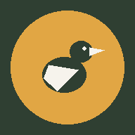
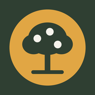
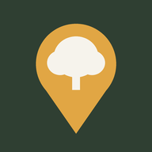

¿A dónde vas hoy?
Elige la herramienta que necesitas. Todas funcionan en el celular, sin internet, y guardan la información en el mismo dispositivo donde las usas.

Avistamiento de Aves
Registra los avistamientos durante el monitoreo: especie, lugar, individuos, estratificación, comportamiento y el punto GPS donde se vio el ave, con historial, curva de acumulación de especies y exportación a CSV o GeoJSON.

Árboles Semilleros
Registra el monitoreo mensual de los árboles semilleros: al digitar el código de la placa aparecen solos el nombre común y el científico, se marca la fenología de la copa y el estado fitosanitario, y el calendario fenológico se arma solo.

Árboles con permiso
Lleva a cada árbol con permiso de aprovechamiento ante Corpoamazonía: lista por predio o mapa satelital con el polígono del predio y la UMF, distancia y flecha desde tu GPS, la información del árbol y de la especie, y una observación por visita que se exporta a Excel.
Cada app tiene su enlace
- Este panel es interno. A cada persona pásale el enlace de su app, no el de esta página: lo abre, la instala y le queda solo esa app, guardada para usarla sin internet.
- Instalar: en Android, menú ⋮ → Instalar app o Añadir a pantalla de inicio; en iPhone, con Safari, Compartir → Añadir a pantalla de inicio. Hay que abrirla una vez con internet.
- Aves y Árboles con permiso guardan los datos solo en el celular (se exportan desde la app). Semilleros los envía a la base cuando hay señal.